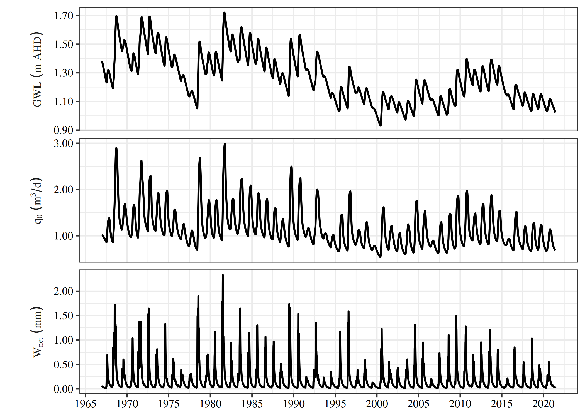
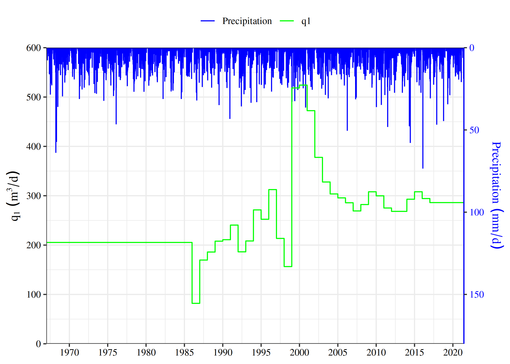
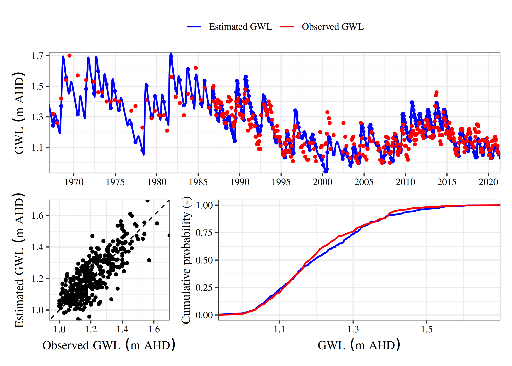
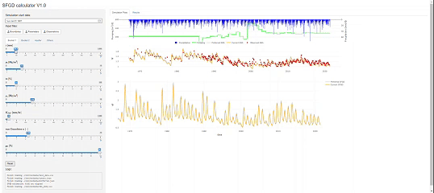

Submarine fresh groundwater discharge (SFGD) is a critical pathway for nutrient transport to marine ecosystems, yet its quantification is often hindered by sparse and infrequent data in coastal zones. SGDr presents a parsimonious methodology for estimating SFGD in data-sparse settings by integrating simple modelling techniques to characterize coastal aquifer water fluxes. It combines a soil water balance model with a lumped-parameter representation of the aquifer, incorporating the freshwater-seawater interface. Its simplicity enables rapid calibration and uncertainty analysis, supporting land-use decisions and field investigations.
Installation
You can install the development version of SGDr from GitHub with:
# install.packages("devtools")
devtools::install_github("hxfan1227/SGDr")Example
To calculate the SFGD using estimate_sgd(), the input data required includes:
- Daily precipitation (R [mm])
- Evapotranspiration (E0 [mm])
- Pumping rate (q1 [m3/d])
- Initial groundwater table (hf [mm])
- Initial water table in the two soil buckets. (phi1, phi2 [mm])
Below is an example of the input file:
library(SGDr)
test_data <- read.csv(SGDr_example('test_data.csv'))
head(test_data)
#> t R E0 phi1 phi2 hf q1
#> 1 1 0 4.2 25 100 1.5 205.3388
#> 2 2 0 4.7 0 0 0.0 205.3388
#> 3 3 0 5.2 0 0 0.0 205.3388
#> 4 4 0 6.0 0 0 0.0 205.3388
#> 5 5 0 7.9 0 0 0.0 205.3388
#> 6 6 0 5.0 0 0 0.0 205.3388The parameters are stored using JSON format (.json). Two types of parameter JSON files are required:
- Calibratable Parameters JSON File: Contains parameters that are adjustable or subject to calibration during model optimization.
- Constant Parameters JSON File: Contains fixed parameters that remain unchanged throughout the model run.
Use json_to_parameter_list to convert JSON files into list:
cali_pars <- json_to_parameter_list(SGDr_example('preferred.json'))
cnst_pars <- json_to_parameter_list(SGDr_example('consts.json'))The SFGD can then be calculated as:
results <- estimate_sgd(test_data, cali_pars, cnst_pars, 120, 1500)
results
#>
#> SGD Estimation Summary
#> Warning in summary.SGD_ESTIMATION_DF(x, ...): No base date available. Please provide the base date to calculate the simulation period.
#> Simulation length: 19884 days
#> Estimated SFGD (q0): 1.16 m2/d
#> Estimated Recharge (Wnet): 0.19 mm/d
#> Estimated Runoff (Q): 0.38 mm/d
#> Median hn: 1.73 m
#> Median xn: 8539.46 m
# use summary
summary(results, base_date = '19670101')
#>
#> SGD Estimation Summary
#> Simlation period: 1967-01-01 - 2021-06-09
#> Estimated SFGD (q0): 1.16 m2/d
#> Estimated Recharge (Wnet): 0.19 mm/d
#> Estimated Runoff (Q): 0.38 mm/d
#> Median hn: 1.73 m
#> Median xn: 8539.46 m
# use print
print(results, base_date = '19670101')
#>
#> SGD Estimation Summary
#> Simlation period: 1967-01-01 - 2021-06-09
#> Estimated SFGD (q0): 1.16 m2/d
#> Estimated Recharge (Wnet): 0.19 mm/d
#> Estimated Runoff (Q): 0.38 mm/d
#> Median hn: 1.73 m
#> Median xn: 8539.46 mThe estimated results can be visualized with plot:
# visualize the prediction results
plot(results, base_date = '19670101')
# visualize the input data
plot(results, base_date = '19670101', type = 'input')
# compare with the observed groundwater table
library(data.table)
obs_data <- data.table::fread(SGDr_example('obs_data.csv'))
plot(results, y = obs_data, base_date = '19670101', type = 'comp')
A GUI made in shiny is also available:
